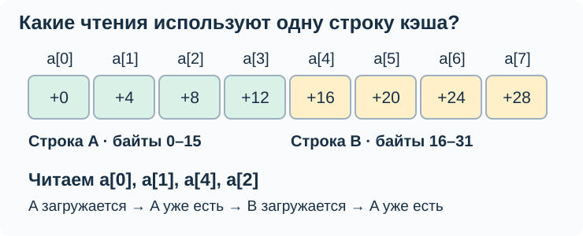
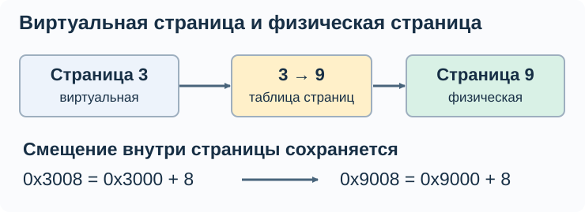

Где находится число, когда его читает процессор?
Пусть программа суммирует элементы массива. В C++ каждый шаг можно записать как sum += a[i]. Процессору нужно получить байты по адресу элемента. Начнём с того, почему скорость чтения зависит от порядка обхода.
Почему соседнее число часто уже рядом
Кэш хранит близко к ядру данные, которые недавно читали или записывали. Обмен между уровнями памяти обычно идёт блоками, которые называют строками кэша. Если нужные байты уже находятся на проверяемом уровне, происходит попадание. При промахе приходится запросить данные дальше по иерархии. На обычном компьютере таких уровней несколько.
Для рисунка возьмём упрощённую машину. Целое занимает 4 байта, строка кэша — 16 байтов, начало массива совпадает с началом строки. В пустом кэше есть место для обеих показанных строк без взаимного вытеснения. Опережающую загрузку отключим. Числа под индексами — смещения в байтах от начала массива.

Заполни две строки кэша
Нажми по очереди на элементы 0, 1, 4, 2. Перед каждым чтением попробуй угадать, понадобится ли загрузка. После очистки можно проверить другой порядок.
При первом чтении a[0] подгружаются байты 0–15. Следующий элемент a[1] уже там. Для a[4] потребуется вторая строка, а для a[2] по-прежнему доступна первая. Итого четыре чтения программы, два промаха в нашей модели. На конкретном процессоре результат зависит от размеров и устройства кэша, выравнивания, предвыборки и остальных обращений.
При последовательном обходе мы скоро используем соседей каждого элемента. Это пространственная локальность. Если мы вскоре снова обращаемся к тем же данным, это временная локальность. Оба эффекта помогают понять, почему два обхода с одинаковой сложностью O(n) иногда занимают разное время.
Где память физически хранит биты
В ядре процессора регистры дают командам быстрый доступ к небольшому числу значений. Для кэшей обычно используют SRAM. Её ячейка поддерживает одно из двух устойчивых состояний, пока подаётся питание. Для основной оперативной памяти ПК обычно используют DRAM. В типичной ячейке DRAM бит представлен зарядом маленького конденсатора, а транзистор открывает доступ к нему. Заряд постепенно утекает, поэтому содержимое периодически обновляется. Такие ячейки компактны, и их можно разместить очень много.
Жёсткий диск или SSD сохраняет файлы и после выключения питания. При обычном чтении файла операционная система делает данные доступными программе через оперативную память. Указатель C++ на эти данные после чтения содержит адрес в памяти процесса. На диске место файла определяет файловая система.
Как адрес программы связан с оперативной памятью
На компьютере с виртуальной памятью операционная система делит адресное пространство процесса на страницы. Для страниц, находящихся в оперативной памяти, она задаёт сопоставление с физическими страницами и права доступа. Аппаратура процессора использует эти сведения при обращении к памяти. Часто используемые переводы адресов тоже кэшируются.

Пусть размер страницы равен 4096 байтам, то есть 0x1000. Адрес 0x3008 лежит на виртуальной странице 3, на восемь байтов дальше её начала. Если система сопоставила её физической странице 9, искомый байт имеет физический адрес 0x9008. Другой процесс может получить другое сопоставление для такого же виртуального адреса. На микроконтроллере без механизма виртуальной памяти эта стадия перевода может отсутствовать.
Связанные главы. Как устроена память в примерах на C++ · Массивы и векторы · Префиксные суммы.
Подробнее о порядке обращений — в Algorithmica, Spatial and Temporal Locality, версия 2021 года. Перевод адресов на примере учебной ОС разобран в MIT xv6, Page tables, версия 2021 года.